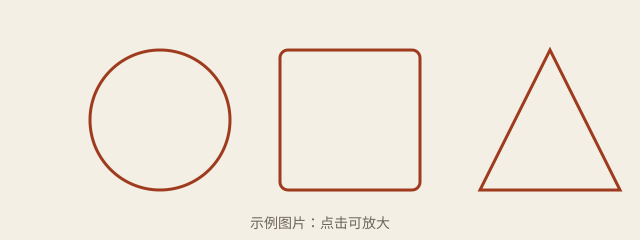

第 1 课：版式与组件
site.css 组件清单里的每一个组件，在这一页都有一个样例。
正文与旁注
这是一段足够长的正文，用来观察正文栏的宽度。默认「适中」档位下每行大约四十多个汉字，窗口变窄时自动收缩；切到「窄」档会回到每行约三十五个汉字的经典宽度。高亮文字、粗体、斜体、行内代码、[ 快捷键都应该清晰可辨。
第二段正文紧跟在旁注后面。旁注在 HTML 里写在它所解释的段落之后，宽屏时和下一段顶部对齐，这是 Tufte 风格的常见做法。这一段再多写几句，让它和旁注在高度上有重叠，方便检查两者不会互相遮挡。
这是一段 .muted 次要文字。
提示框
callout--note
补充说明。
callout--tip
技巧。
callout--important
重要。
callout--warn
注意 / 陷阱。
callout--caution
警告，后果严重。
callout--source
推荐的主资料：markdown-it。
callout--ask
有任何不清楚的地方，随时问老师（agent）。
测验
下面是测验组件的三种状态（静态样例，没有交互逻辑）。
正文宽度的默认档位是哪一个？
答对了：默认是「适中」，并随窗口自适应。
代码块
课程里的 <pre> 不做语法高亮，但会自动加上语言标签和复制按钮（鼠标移上去才出现）。
// 复制按钮应该只复制代码本身
const pages = ["0001-typography.html", "0002-long-page.html"];
console.log(pages.length);没有语言的代码块只有复制按钮。图片与表格

| 档位 | 目标宽度 | 旁注 |
|---|---|---|
| 窄 | 38rem | 右侧 |
| 适中（默认） | 48rem | 右侧 |
| 宽 | 60rem | 正文内 |
| 全宽 | 铺满 | 正文内 |
| .fullwidth | 突破正文栏 | 的宽表格 | 第四列 | 第五列 | 第六列 |
|---|---|---|---|---|---|
| 宽屏时伸进旁注栏 | 内容 | 内容 | 内容 | 内容 | 内容 |
其他默认样式
引用块：学习的目标是存储强度，而不是一时的流畅感。
details 折叠块
展开后的内容。
- 正文栏
- 正文文字所在的那一栏。
交叉链接用相对路径：第 2 课、验证清单、Markdown 全写法。